Where a setting applies
Design version: 1.0.0, direction B · Reach. Owner request of 2026-11-18: a note beside a setting that says what it applies to. The wording is a draft for the Honesty review; the decisions are in SETTING-SCOPE.md.
Fast Shutter (Standard, Freeze Motion 1/500 s, Freeze Fast Motion 1/1000 s) is used only while Manual Controls are off. With Manual Controls on, a shutter that is set is used as set, and a shutter on Auto is the camera’s own, with no limit from this choice. Today the Settings list does not say so. This design adds one line to the row and rewrites the page, and leaves Q and the camera as they are, because they already show the choice only where it is used.
- Name the control, not a mode. The note says “while Manual Controls are off”: the name the button has for VoiceOver, Voice Control and Settings search, and the name the app’s other sentences use. “Full auto” has no control of that name, and VoiceOver says “Full auto” after All Auto while Manual Controls are still on, where the choice is not used.
- A note is not a warning. Plain secondary text, no symbol, no amber, no teal.
- Always the same. The note on the list never changes, so no row moves. What is true now is said on the page, in one line.
- Only what needs it. Every other setting was checked; none needs a note (the table below).
Settings
The list and the Camera group
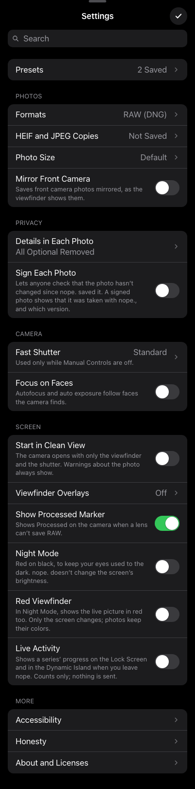
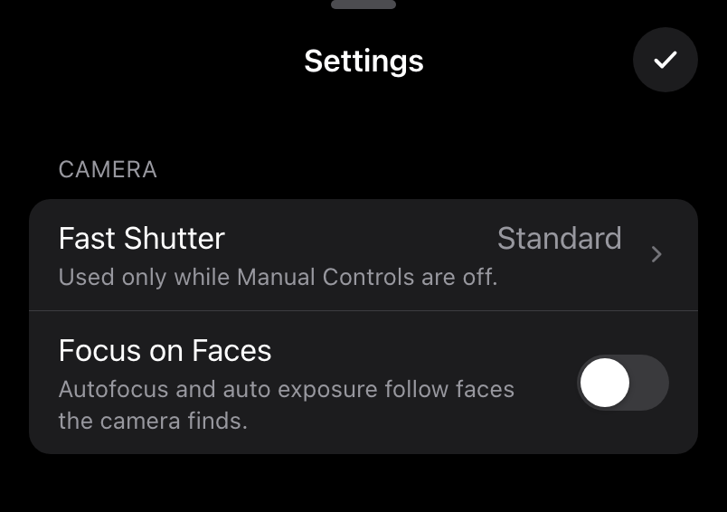
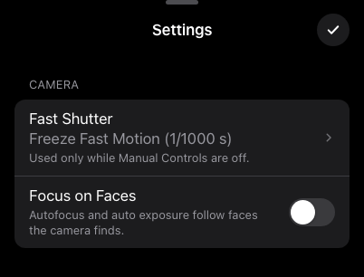
Light, night mode, right to left, the largest text size, VoiceOver
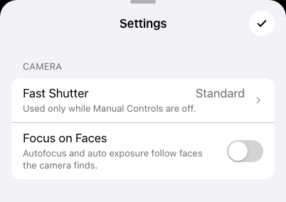
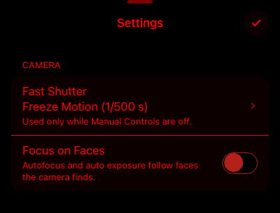
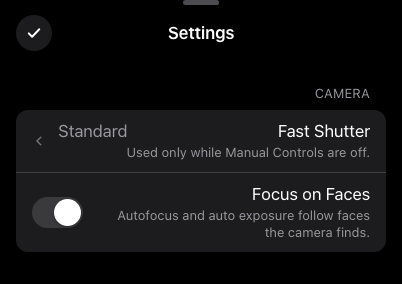
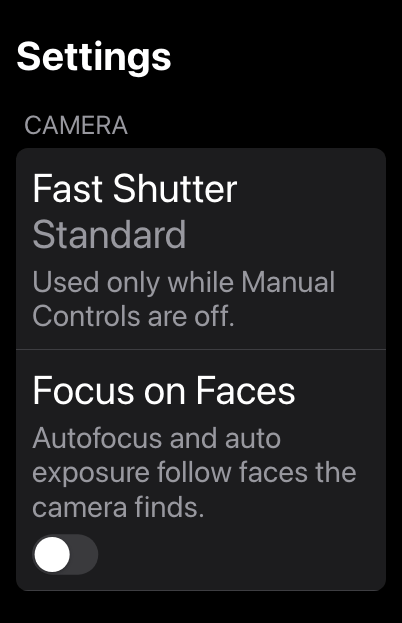
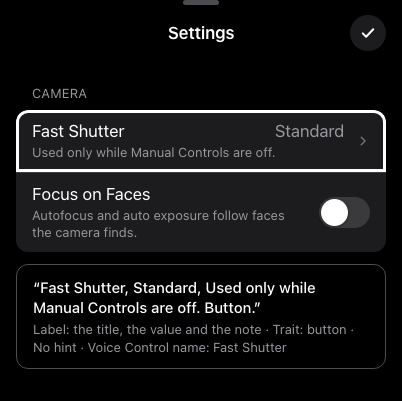
The Fast Shutter page
The page
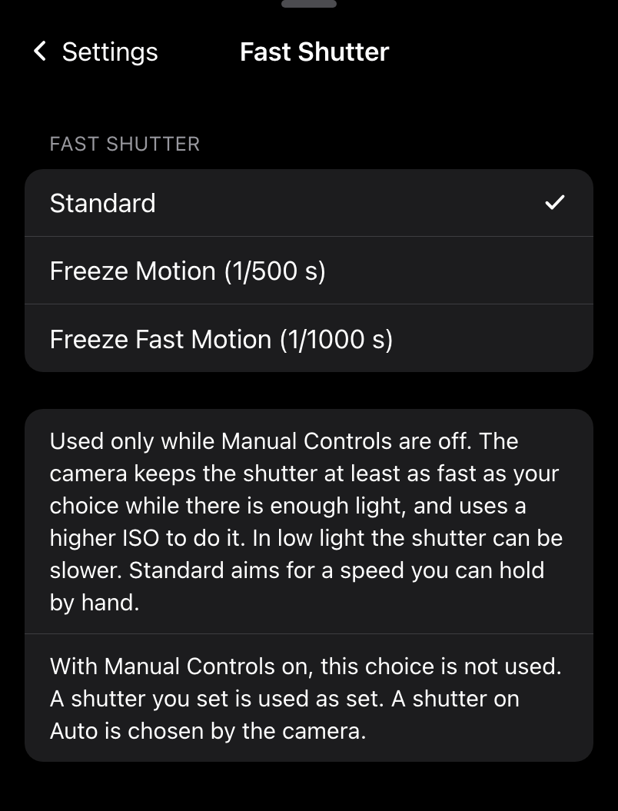
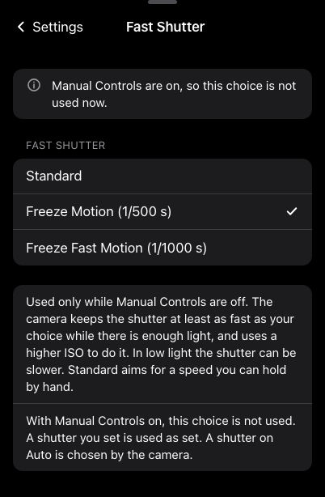
Night mode, right to left, the largest text size
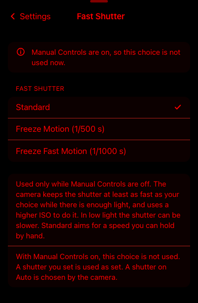
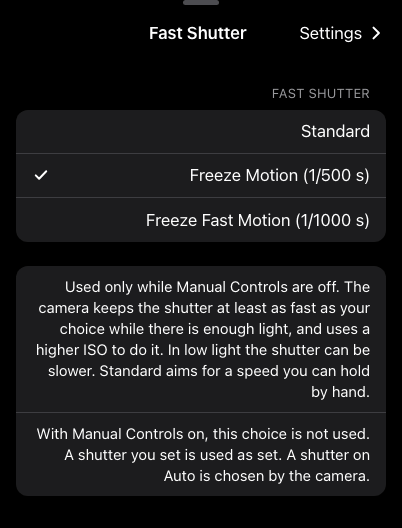
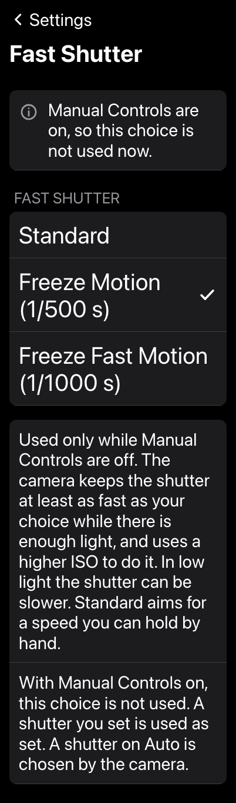
Q and the camera
Q shows nothing about Fast Shutter while Manual Controls are on.
Q
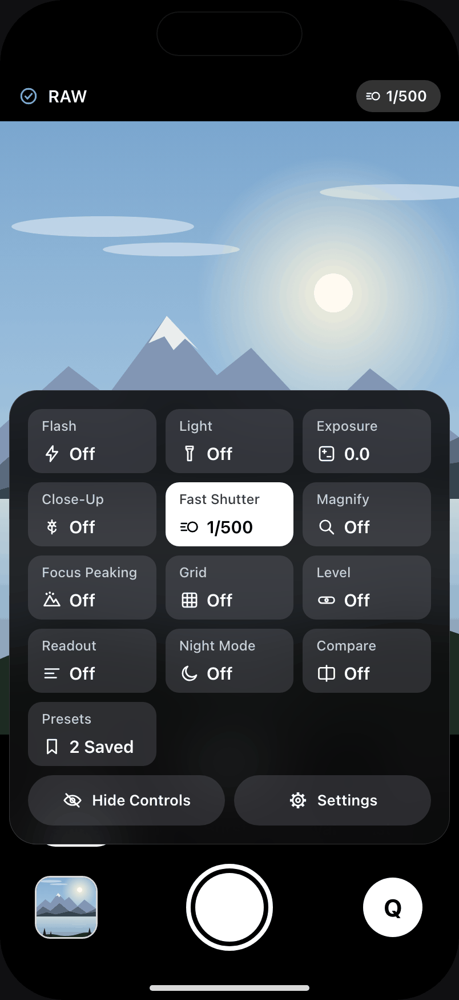

The pill
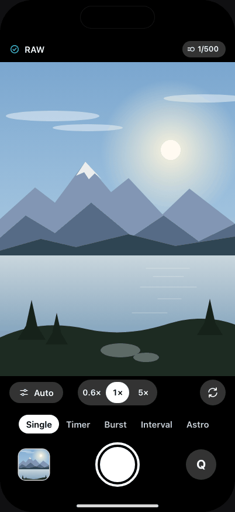
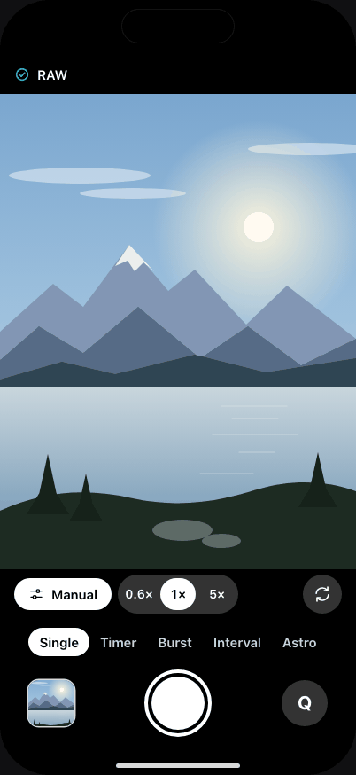
Each place Fast Shutter appears
| Place | Change | What it shows |
|---|---|---|
| Settings › Camera › Fast Shutter | Changed | The note, under the title and value. |
| The Fast Shutter page | Changed | Two paragraphs; one line at the top while Manual Controls are on. |
| Q, Manual Controls off | No change | The tile is shown only where the choice is used. |
| Q, Manual Controls on | No change | The tile is left out, and nothing takes its place. |
| The Fast Shutter pill | No change | Shown only while the choice is used and is not Standard. |
| Settings search | No change | The result names Fast Shutter and Camera, and opens the page, which begins with the note. |
| Shortcuts: Set Fast Shutter | One sentence changed | The description names Manual Controls. Siri’s answer is unchanged. |
The wording
US English. Drafts for the owner’s Honesty review. Each sentence states only what the code does: the choice sets the longest shutter the camera’s auto exposure may use, the limit is lifted when the scene is too dark for it at the lens’s highest ISO, and none of it is applied while Manual Controls are on.
| Where | Today | Proposed |
|---|---|---|
| Settings › Camera › Fast Shutter, under the title | (nothing) | Used only while Manual Controls are off. |
| Fast Shutter page, first paragraph | In full auto, the camera prefers the fastest shutter that still exposes well, so photos blur less. Standard aims for a speed you can hold by hand. Manual controls are never changed. | Used only while Manual Controls are off. The camera keeps the shutter at least as fast as your choice while there is enough light, and uses a higher ISO to do it. In low light the shutter can be slower. Standard aims for a speed you can hold by hand. |
| Fast Shutter page, second paragraph | (nothing) | With Manual Controls on, this choice is not used. A shutter you set is used as set. A shutter on Auto is chosen by the camera. |
| Fast Shutter page, top line while Manual Controls are on | (nothing) | Manual Controls are on, so this choice is not used now. |
| Shortcuts, the description of Set Fast Shutter | Chooses how fast a shutter nope.’s full auto prefers, to avoid blur. | Chooses how fast a shutter nope. prefers while Manual Controls are off, to avoid blur. |
One pattern for every setting with a limited reach
The pattern
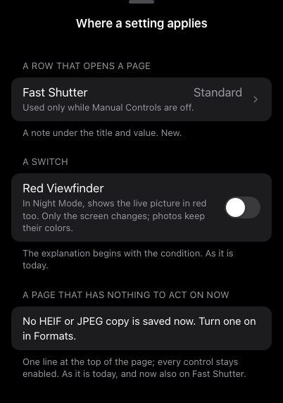
A setting that is used only in some state of the camera says so on the list, in words that name the control that decides the state. On a switch, the explanation begins with the condition. On a row that opens a page, a note of one sentence sits under the title and value. On a page whose choices are not in use now, one line at the top says so and every control stays enabled. A control on the camera or in Q needs no note: it is shown only where it works.
| Setting or control | Used only | Does it say so today | Change |
|---|---|---|---|
| Fast Shutter | Manual Controls off | Only in the last sentence of its page | The note and the page text. |
| Red Viewfinder | Night Mode on | Yes: “In Night Mode, shows the live picture in red too.” | None. It is the model for the pattern. |
| Focus on Faces | While focus or exposure is automatic | Yes: “Autofocus and auto exposure follow faces the camera finds.” | None. |
| Show Processed Marker | A lens that can’t save RAW | Yes, in its sentence; the row is shown only on a device with such a lens | None. |
| Mirror Front Camera | The front camera | Yes, in its name and sentence | None. |
| Live Activity | While a series runs | Yes: “Shows a series’ progress…” | None. |
| HEIF and JPEG Copies | While a HEIF or JPEG copy is saved | Yes: the value “Not Saved” on the row, and the first line of the page | None. The Fast Shutter page borrows its first line. |
| Night Mode | The app’s own screens | Yes: “nope. doesn’t change the screen’s brightness.” | None. |
| Exposure (Q) | Manual Controls off | The tile is left out with Manual Controls on; the EV readout takes its place | None. |
| Far Focus (Q) | Autofocus, with Manual Controls on | The tile is shown only with Manual Controls on | None here. See the finding below. |
| Close-Up (Q) | Autofocus | The tile is shown where the lens can limit focus | None here. See the finding below. |
| Flash (Q) | A lens with a flash; never a burst or a bracket | The tile is left out on a lens without a flash | None here. See the finding below. |
Found while checking, not changed here
- Close-Up and Far Focus limit autofocus. With Focus set by hand they have no effect, but, read from the code, their tiles and pills can still read On. To be confirmed on a device.
- A burst never fires the flash. Read from the code, the Flash pill can still read On or Auto while Burst is selected. To be confirmed on a device.
- VoiceOver says “Full auto” after All Auto, while Manual Controls stay on.
Each is a question of its own (SETTING-SCOPE.md, section 7).